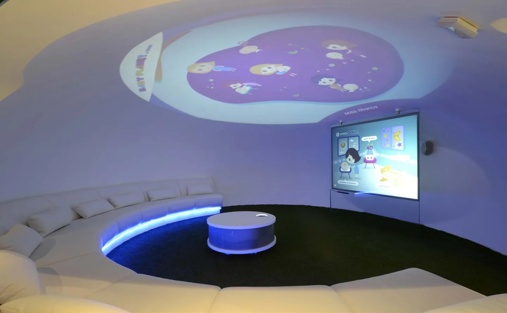
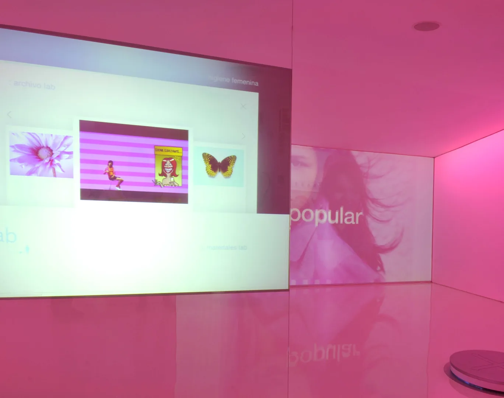
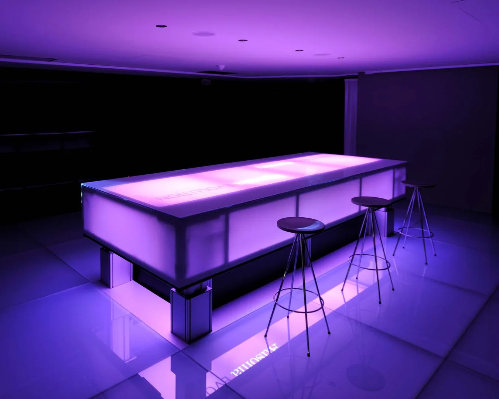
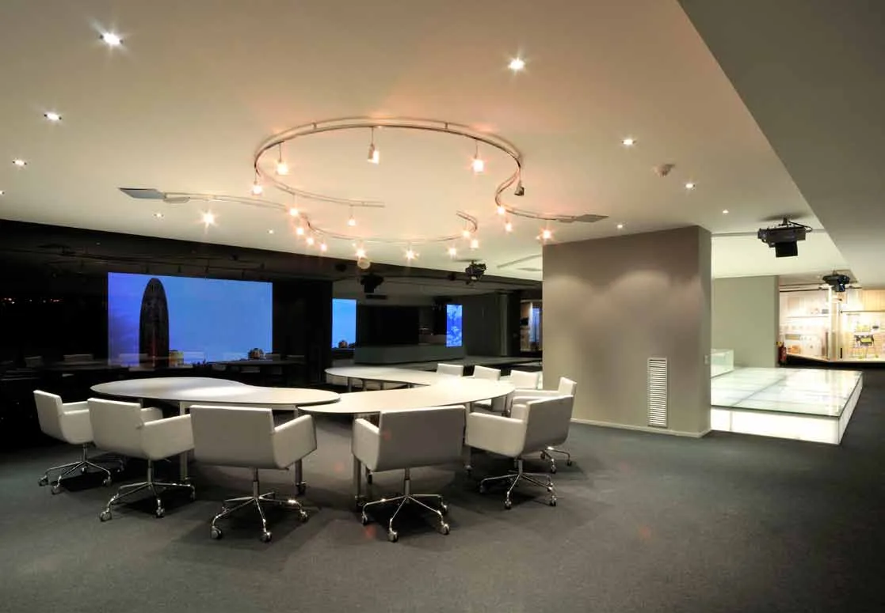
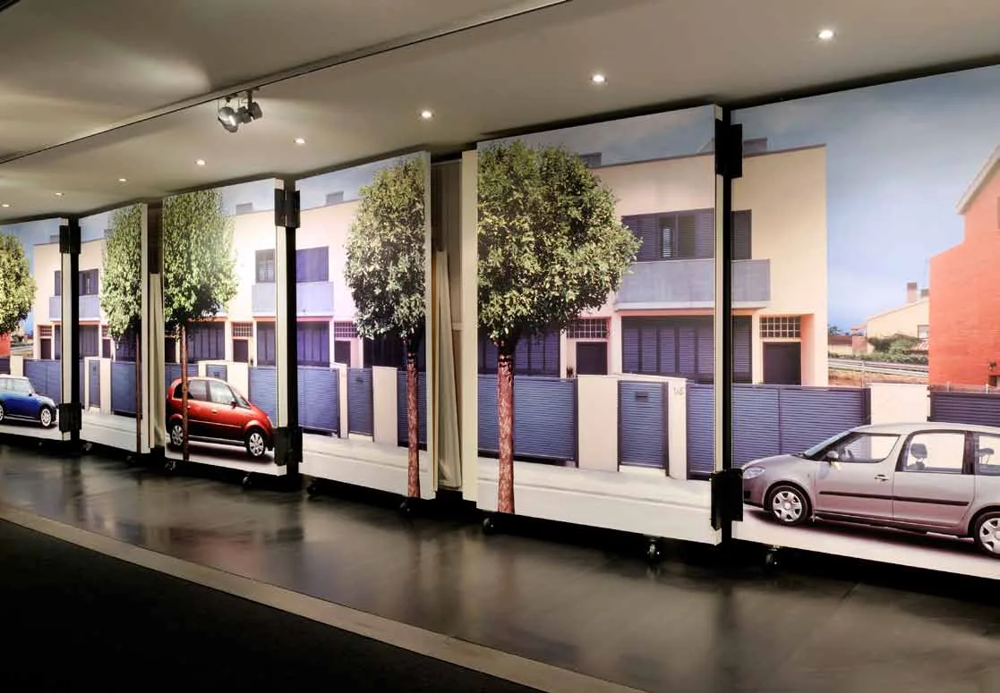

Marketing y comunicación
Centro de Innovación de Clientes
Arbora & Ausonia / Procter & Gamble · Barcelona · 2008–2013
Mi aportación. Dirección de Optimus y de equipos multidisciplinares

01
Contexto
Un espacio de encuentro con distribuidores y clientes clave, renovado en sucesivas ediciones.
02
Necesidad
Convertir estrategias y novedades de producto en una conversación participativa con el cliente.
03
Estrategia
Desde la dirección de Optimus, coordiné el marco de trabajo de un equipo que reunía contenidos, diseño espacial, audiovisuales e ingeniería. La comunicación experiencial articulaba ambientes inmersivos, instalaciones interactivas y recursos para explorar productos y hábitos de compra.
04
Impacto
El trabajo tomó forma en sucesivas renovaciones del espacio y sus contenidos. La documentación recoge las ediciones de 2008 a 2013; no se atribuyen resultados de ventas no medidos.





Créditos y alcance
Cliente: Arbora & Ausonia / Procter & Gamble. Diseño y realización: equipo de Optimus Medina Riley.
¿Qué tienes entre manos?
Podemos empezar por una necesidad concreta o por una idea que aún necesita forma.